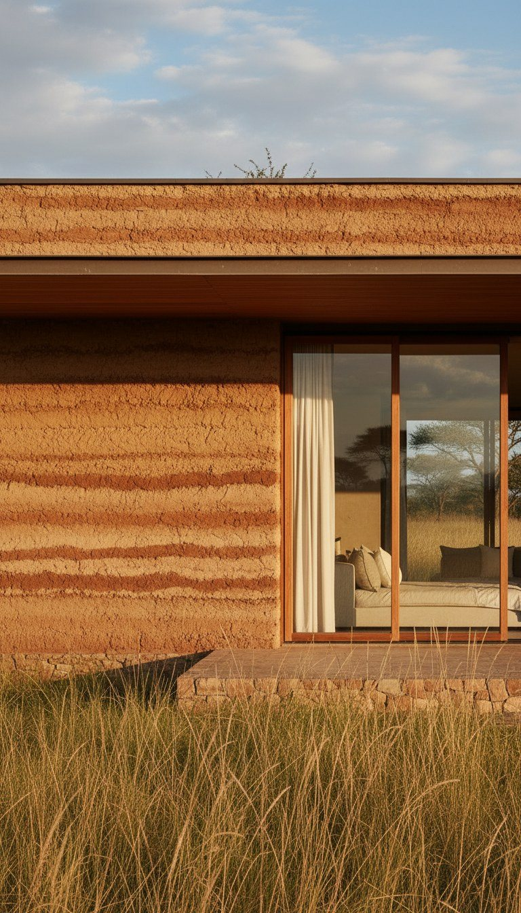
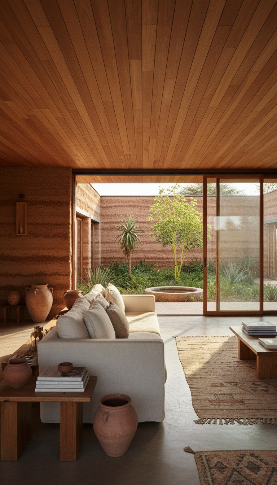
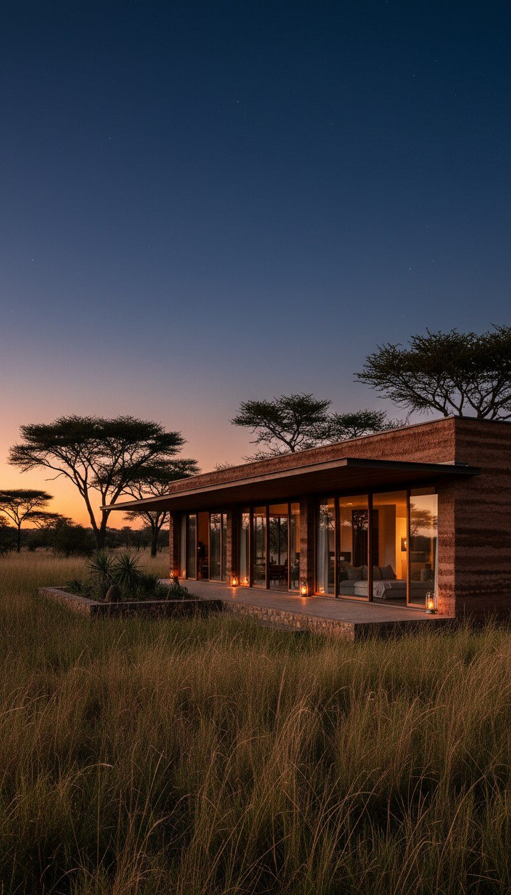

Hakan Anadolu unglazed terracotta water pitcher, 1.5 qt
A handmade clay jug from Cappadocia, Turkey, with a stopper and a small saucer.
View on AmazonAI-generated concept home. Not a real property or product. It is not for sale or for rent. The products suggested below are real Amazon listings, chosen in the spirit of the house. The images on this page are AI-generated, not photographs of a real place.
The camera is down low, skimming the tips of tall golden grass. The seed heads are backlit by the early sun and they shimmer as the wind moves through them. Above, the sky takes up almost everything: pale blue, soft high clouds, no end to it in any direction. Far off, one flat-topped acacia on the horizon.
No fences. No roads. No house, yet. Just grass and sky, and the feeling that you could walk in any direction for a day.
Some links on this page are Amazon affiliate links. We may earn a commission at no extra cost to you.
As an Amazon Associate I earn from qualifying purchases.
Then a lone umbrella acacia in the foreground, and far beyond it, almost too small to notice, a single long horizontal line sitting on the grassland. That line is the house. It doesn’t rise up out of the landscape. It lies down in it.
This is our slowest reel of the week, and on purpose. Some places shouldn’t be rushed.
Up close, the walls are rammed earth: damp soil packed down hard in layers, one on top of the next, so that each wall carries fine horizontal stripes of ochre, rust and cream. It looks like a cliff face cut clean. When the low sun rakes across it, every layer shows, and the thin roof above throws one crisp shadow line straight along the top.
The beauty of an earth house is that it is the same colour as the ground it came from. From a distance, it belongs.

The roof is one thin flat plane that runs the whole length of the house and keeps going, far past the walls, so the entire front becomes a deep shaded veranda. This is where life happens in the middle of the day. A long linen daybed piled with cushions. Woven leather chairs. A low timber table with a clay water jug sweating in the heat. On one side the warm earth wall, on the other side nothing at all: the golden plain, the acacias, the sky.
Everything here is natural and plain on purpose: clay, timber, woven fibre, linen. A clay jug on a low table and a few grass-coloured cushions are the simplest way to borrow this veranda.
A handmade clay jug from Cappadocia, Turkey, with a stopper and a small saucer.
View on Amazon
Ramie and cotton covers with a flange edge, the colour of dry grass; inserts not included.
View on AmazonWalk inside and the light softens. The living room has ochre earth walls, a long timber ceiling, a low linen sofa, woven rugs, clay pots and books. On one side, glass doors slide all the way open onto a small inner courtyard: aloes, ferns, a young fever tree with its pale yellow-green bark, and a shallow stone basin of water.
After all that open grass, the courtyard is the surprise. A small, green, private room open to the sky, right in the middle of the house, for the moments you want the world to be smaller.

Underfoot, the house wants something woven. A big hand-woven jute and cotton rug is the same colour family as the walls and the grass outside.

Sixty percent jute and forty percent cotton, hand-woven in India; the listing recommends a rug pad.
View on AmazonThe aerial shot is where the design reads. One long pavilion, one clean roof line, a small square of green set into it, a faint dirt track leading in, and acacias casting long shadows across an ocean of grass. It is a very small mark on a very big place, and that is exactly why it works.
The reel ends at dusk. The veranda and the glass walls glow warm amber from inside. A few lanterns are lit on the terrace. The earth walls catch the last pink light, and behind the house the sky goes from orange at the horizon to deep blue, with the first stars coming out over the silhouettes of the acacias.
If there is a more peaceful way to end a day, we haven’t found it.

This house is the opposite of a mansion. It is one storey, one roof, one line. But you would have the whole sky for a yard, and it’s hard to imagine anything bigger than that.
Tell us in the comments on the reel whether you’d move in, and which of the five dream homes this week is yours.
The images on this page and the reel’s visuals and voice are AI-generated. This is a concept home, not a real property.
The products above are our suggestions in the spirit of the house; they are not items shown in the reel. Product details: each linked Amazon.com listing, loaded 23 Nov 2026 (America/Toronto).